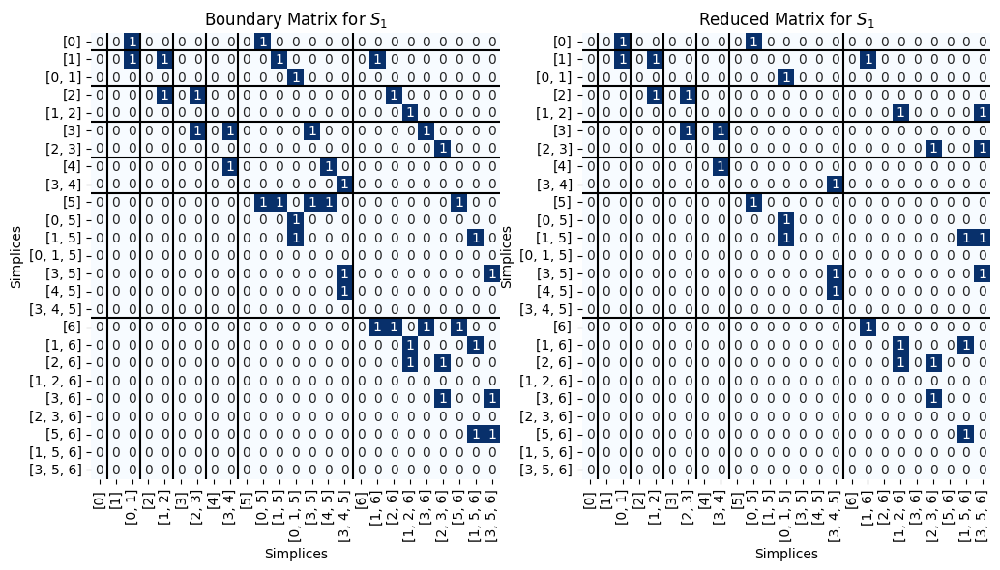
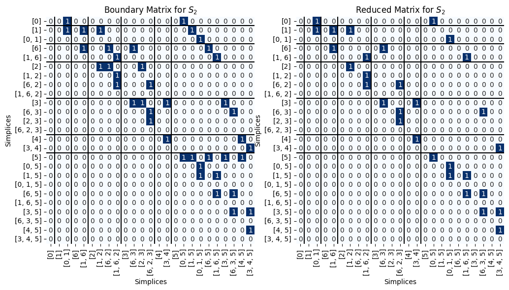
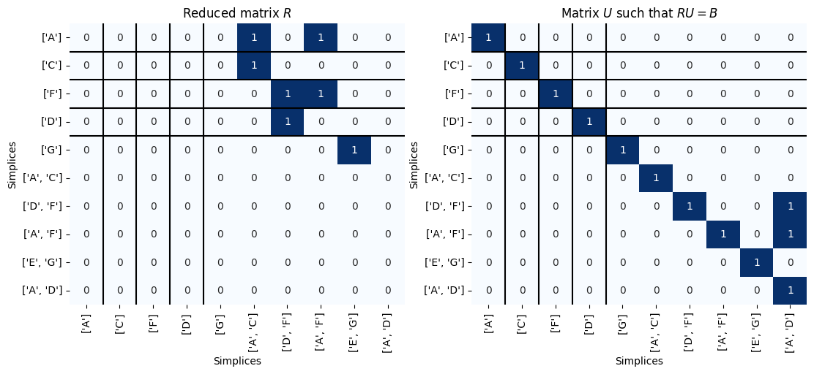

Solutions for Lecture 11 Exercises#
See today’s class jupyter notebook for the rest of today’s content.
This notebook also requires the TeachingPersistence.py script.
import TeachingPersistence as Pers
# Standard imports
import matplotlib.pyplot as plt
import numpy as np
%matplotlib inline
Q1#
We’re still working with the example from the main notebook:

The original function is
f = {0: 8, 1: 13, 2:27, 3: 31, 4:38, 5: 52, 6: 60}
What happens if the function is different? Try computing the reduced matrix for the lower star filtration of these two functions:
f_1 = {0: 1, 1: 3, 2:5, 3: 7, 4:9, 5: 11, 6: 13}f_2 = {0: 8, 1: 13, 2: 27, 3: 31, 4: 38, 5: 52, 6: 15}
What changes (if any) occur in the simplex pairing?
What changes (if any) occur in the persistence diagram?
What changed in the function that caused (or didn’t cause) differences? `
# The original simplicial complex, order doesn't matter yet
S = [[0], [1], [2], [3], [4], [5], [6],
[0,1], [1,2], [2,3], [3,4], [4,5], [0,5],
[1,5], [3,5], [2,6], [3,6], [5,6], [1,6],
[0,1,5],[3,4,5], [2,3,6], [1,5,6], [1,2,6], [3,5,6]]
# Storing the two functions
f_1 = {0: 1, 1: 3, 2:5, 3: 7, 4:9, 5: 11, 6: 13}
f_2 = {0: 8, 1: 13, 2: 27, 3: 31, 4: 38, 5: 52, 6: 15}
# Making a function to get the value of a simplex
def f_val(s, f):
return max([f[v] for v in s])
# Sorting the complex S by each of the two functions
S_1 = Pers.colex_order(S, f_1)
S_2 = Pers.colex_order(S, f_2)
Function 1#
For this function, notice that even though the function changed, the order that the vertices entered didn’t, so the pairs will end up being the same.
B_1 = Pers.boundary(S_1)
R_1, V_1, low_1= Pers.standard_persistence_reduction(B_1, return_type = 'V')
fig, ax = plt.subplots(1,2, figsize = (12,6))
Pers.drawMat(B_1, S_1, ax = ax[0])
ax[0].set_title('Boundary Matrix for $S_1$');
Pers.drawMat(R_1, S_1, ax = ax[1])
ax[1].set_title('Reduced Matrix for $S_1$');

We can go get the paired simplices. Note that this pairing is the same as on the example from the main notebook.
pairs = Pers.get_pairs(low_1, S_1)
for p in pairs:
print(p)
([0], None)
([1], [0, 1])
([2], [1, 2])
([3], [2, 3])
([4], [3, 4])
([5], [0, 5])
([1, 5], [0, 1, 5])
([4, 5], [3, 4, 5])
([6], [1, 6])
([2, 6], [1, 2, 6])
([3, 6], [2, 3, 6])
([5, 6], [1, 5, 6])
([3, 5], [3, 5, 6])
The only pairs that are off-diaongal points are the same, but the function values are different than from the original example.
Pers.get_pers_points(pairs, lambda s: f_val(s, f_1))
[(1, inf), (11, 13)]
Function 2#
For this function, the order of the vertices changed, so we can expect bigger changes in the persistence diagram as well as the pairings.
B_2 = Pers.boundary(S_2)
R_2, V_2, low_2= Pers.standard_persistence_reduction(B_2, return_type = 'V')
fig, ax = plt.subplots(1,2, figsize = (12,6))
Pers.drawMat(B_2, S_2, ax = ax[0])
ax[0].set_title('Boundary Matrix for $S_2$');
Pers.drawMat(R_2, S_2, ax = ax[1])
ax[1].set_title('Reduced Matrix for $S_2$');

We can go get the paired simplices. Note that this pairing is different from the example from the main notebook.
pairs = Pers.get_pairs(low_2, S_2)
for p in pairs:
print(p)
([0], None)
([1], [0, 1])
([6], [1, 6])
([2], [1, 2])
([6, 2], [1, 6, 2])
([3], [6, 3])
([2, 3], [6, 2, 3])
([4], [3, 4])
([5], [0, 5])
([1, 5], [0, 1, 5])
([6, 5], [1, 6, 5])
([3, 5], [6, 3, 5])
([4, 5], [3, 4, 5])
Now there is no non-trivial 1-dimensional homology.
Pers.get_pers_points(pairs, lambda s: f_val(s, f_2))
[(8, inf)]
Q2#
Compute the 0- and 1-dimensional persistence diagram for the following simplicial complex filtration.

Note that this is not a lower star filtration, so you’ll just have to make a list S_new of the simplces that is already sorted in the right order.
S_new = [['A'], ['C'], ['F'], ['D'], ['G'],
['A','C'],
['D','F'],
['A', 'F'],
['E','G'],
['A', 'D']]
def f_val_new(simplex):
lookup = {'A':1, 'C':1, 'F':1, 'D':1, 'G':1, 'AC':2, 'DF':3,'AF':4, 'EG':5, 'AD':6}
return lookup[''.join([str(v) for v in simplex])]
B_new = Pers.boundary(S_new)
R_new,U_new,low_new = Pers.standard_persistence_reduction(B_new)
fig, ax = plt.subplots(1,2, figsize=(13,5))
Pers.drawMat(R_new, S_new, ax = ax[0])
ax[0].set_title('Reduced matrix $R$');
Pers.drawMat(U_new, S_new, ax = ax[1])
ax[1].set_title('Matrix $U$ such that $RU = B$');

Here are the persistence points. We can determine the dimension of the point aquired by noting the dimension of the simplex that gave birth.
pairs = Pers.get_pairs(low_new, S_new)
for p in pairs:
print(p)
(['A'], None)
(['C'], ['A', 'C'])
(['D'], ['D', 'F'])
(['F'], ['A', 'F'])
(['G'], ['E', 'G'])
(['A', 'D'], None)
Pers.get_pers_points(pairs, f_val_new)
[(1, inf), (1, 2), (1, 3), (1, 4), (1, 5), (6, inf)]
Since this code to get the points will do things in the same order as the pairs was passed in, we know that the 0-dimensional diagram has points:
(1, inf)(1, 2)(1, 3)(1, 4)(1, 5)
The 1-dimensional diagram has just the infinite class
(6, inf)